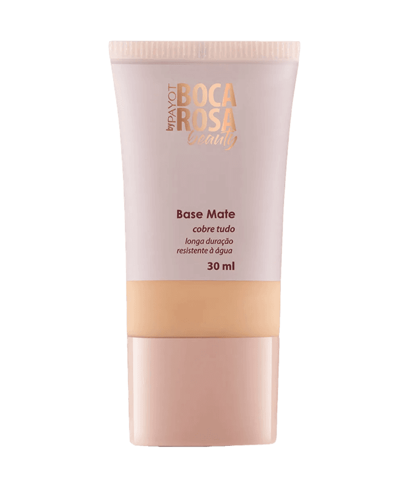
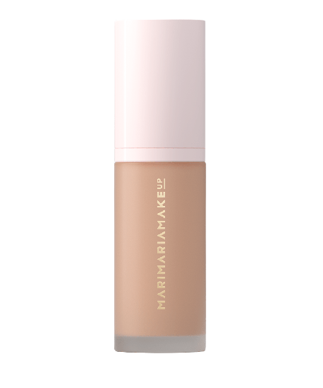
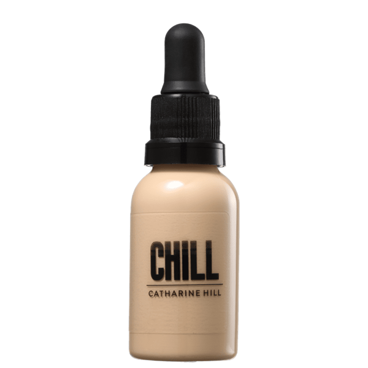
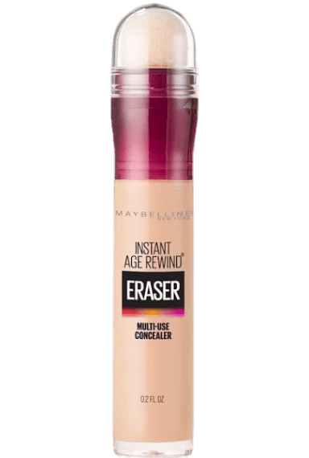
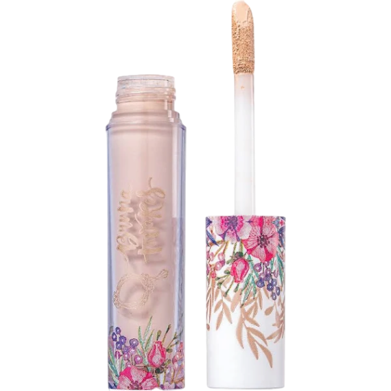
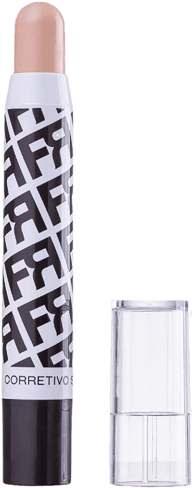
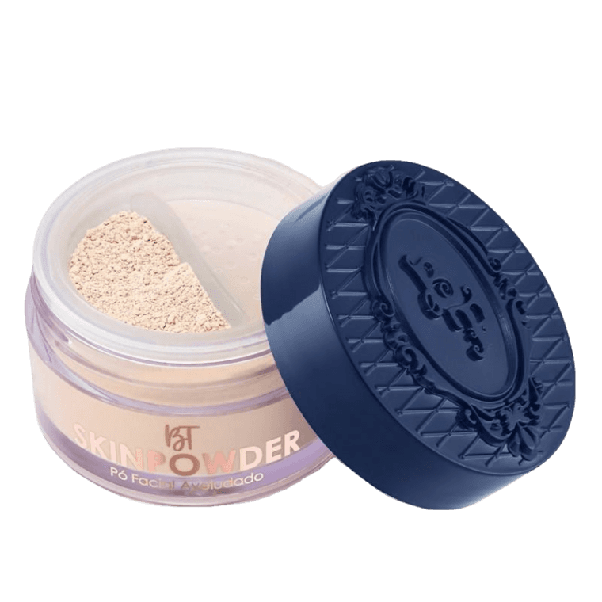
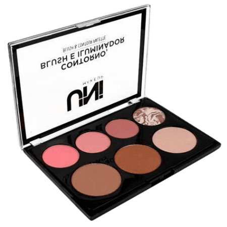

Aplicar a base e o corretivo
Para dar mais luz à pele, uniformizar o tom e cobrir imperfeições, deve-se passar em todo o rosto uma base líquida, cremosa ou compacta, do tom adequado. Para escolher o tom da base, no momento da compra, deve-se passar uma pequena quantidade na região do maxilar inferior, espalhar e optar pela cor que se funde melhor com o tom de pele. A base deve ser aplicada, uniformemente, por todo rosto até a região do pescoço, com o auxílio de um pincel ou esponja. Recomendo as seguintes opções de base:
Bases
  Já o corretivo deve ter cerca de dois tons abaixo do tom de pele, caso seja usado debaixo dos olhos, ou no mesmo tom de pele, caso seja para cobrir imperfeições e deve ser aplicado, após a base. É possível, ainda, utilizar o corretivo para iluminar alguma área do rosto que se deseja destacar, como nariz, olhos ou boca.
Corretivos
  Selagem
Para fixar toda a maquiagem, deve-se passar um pó compacto ou trnaslúcido em todo rosto, usando um pincel grande e macio. Este pó vai ajudar a fixar a base, dando luz e reduzindo o brilho da pele.
Contornos
Para terminar a preparação da pele, pode-se passar um pó bronzeador na lateral da face, debaixo do queixo, pescoço e têmporas, para ajudar a definir o contorno no rosto e um blush nas maçãs do rosto, que proporciona uma pele mais saudável e bonita. Para ser mais fácil de aplicar, deve-se sorrir para o espelho para que possa identificar melhor a região das maçãs do rosto.
